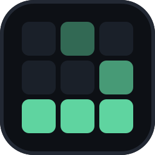
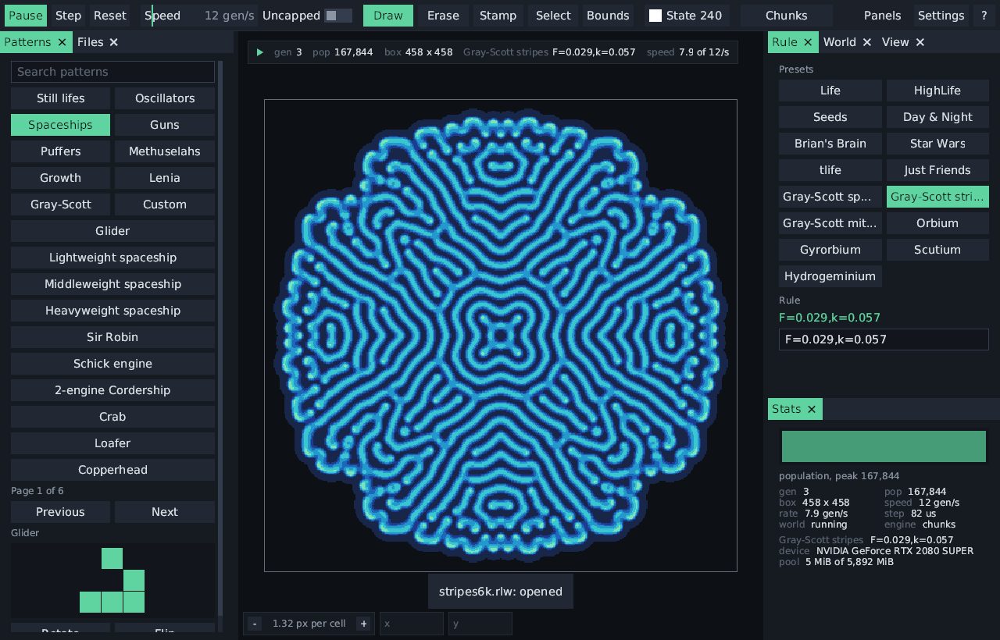
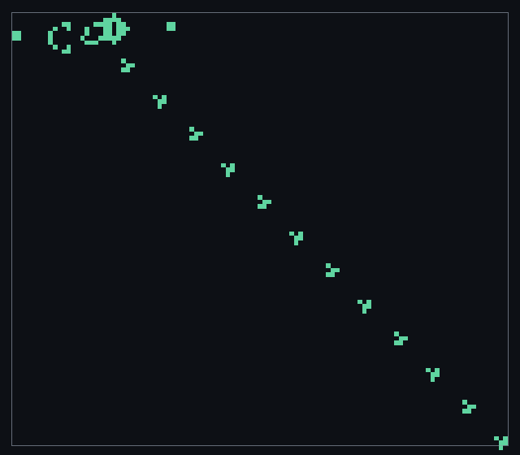

Engine
A sparse pool of 64 by 64 chunks grows in any direction, stepped by compute shaders and drawn straight from the GPU's buffers. Without a capable GPU, every CPU core steps it instead.

cellarA fast, unbounded cellular-automata editor. Draw a pattern, pick a rule, and run it on the GPU, from Conway's Life to Lenia and reaction-diffusion.

Each family runs on the same unbounded world, on the CPU or the GPU, and reads the rule strings Golly and LifeWiki write.

B3/S23
Life and its relatives: Life-like, Generations, isotropic non-totalistic and Larger-than-Life rules, with weighted kernels up to radius 16.
Written in Mach on the boom engine, cellar keeps the work on the GPU wherever it can.
A sparse pool of 64 by 64 chunks grows in any direction, stepped by compute shaders and drawn straight from the GPU's buffers. Without a capable GPU, every CPU core steps it instead.
Gosper's algorithm steps a power of two generations at a time, taking a glider gun to generation 230 in a moment.
Draw, erase, stamp and select, with walls, drawn boundaries and undo across every change. Panels dock, tab and float.
About three hundred classic Life patterns, Lenia creatures and reaction-diffusion seeds, browsed by category or searched by name.
Opens RLE, plaintext, Life 1.05 and 1.06, Macrocell and Golly's .rule tables, and copies RLE ready to paste into LifeWiki or Golly.
cellar run steps a pattern with no window, and --bench measures each engine.
Free and MIT licensed. cellar needs a Vulkan 1.2 GPU, through MoltenVK on macOS.
# open the editor, or a pattern, world or .rule file
cellar
cellar gun.rle
# run headless and write the result
cellar run gun.rle --gens 1000 --out gun.mc
# measure an engine
cellar --bench gpu denseThe guide covers every rule family, file format and option. To build from source, see the README.